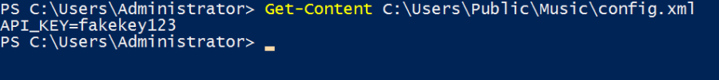

powershell enumeration
THM Room: Hacking with Powershell
Task - 4 : Enumeration
The first step when you have gained initial access to any machine would be to enumerate. We'll be enumerating the following:
• users
• basic networking information
• file permissions
• registry permissions
• scheduled and running tasks
• insecure files
Find All Users & Groups
Get-LocalUser
Get-LocalGroup

Find a user using SID
Get-LocalUser -SID “Enter-SID-Here”
Find How many users have password required set
First get the members of Get-LocalUser to know what is offers, then we can use Where-Object to choose our required member.
Get-LocalUser | Get-Member

We will use the PasswordRequired property in our filter.
Get-Localuser | Where-Object -Property PasswordRequired -Match False

How many Local Groups Exists
Get-LocalGroup | Measure
What is the IP address
Get-NetIPAddress
It lists all the IP address
To get only Ethernet ones use the following filter
Get-NetIPAddress | Where-Object -Property InterfaceAlias -eq Ethernet
How many ports are listening?
We can see all TCP connections with
Get-NetTCPConnection
To get only listening connections use the following filter
Get-NetTCPConnection | Where-Object -Property State -eq Listen
Or
Get-NetTCPConnection -State Listen

How many patches have been applied?
Get-Hotfix
Get-Hotfix | Measure
When was the patch with ID: KB4023834 installed?
Get-HotFix | Where-Object -Property HotFixID -eq KB4023834
Or
Get-Hotfix -ID KB4023834
Find content of a backup file
First search the file. Once found read its contents.
Get-ChildItem -Path C:\ -Include *.bak* -File -Recurse -ErrorAction SilentlyContinue
Get-Content "C:\Program Files (x86)\Internet Explorer\passwords.bak.txt"

Search for all files containing API_KEY
Get-ChildItem C:\* -Recurse | Select-String -pattern API_KEY
This will open all the files in the terminal and output will be clouded.
Get-ChildItem C:\* -Recurse | Select-String -Pattern API_KEY -List | Select Path
Get-ChildItem C:\* -Recurse | Select-String “API_KEY” -List | Select Path
Get-ChildItem -Path C:\* -Recurse | Select-String “API_KEY” -List | Select Path
We can use Path for Get-ChildItem or give directly.
We can use the search string with -Pattern or directly search with quotes
If we don't give Select Path it will open all files.
-List is used so that each file is recorded only once even if it contains multiple API_KEY patterns

Then Read the suspicious file.
Get-Content <FIlePath>

Get all the Processes
Get-Process : To List all the processes

Get all Scheduled Tasks
Get-ScheduledTask : To List all the Scheduled Tasks
Or
Get-ScheduledTask -TaskName new-sched-task
Who is the owner of C:\
Get-Acl C:\